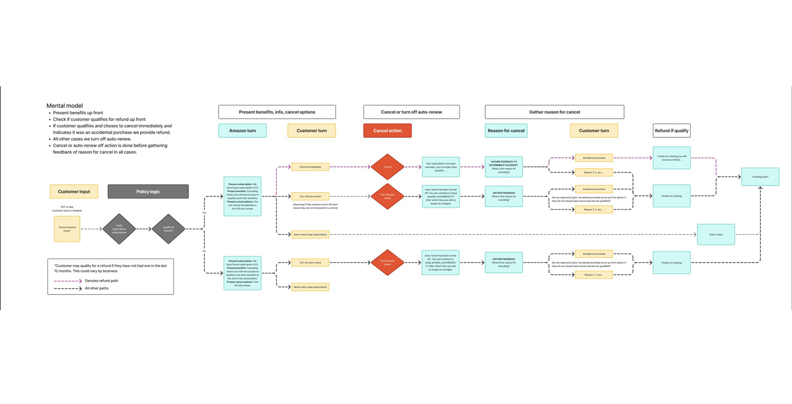
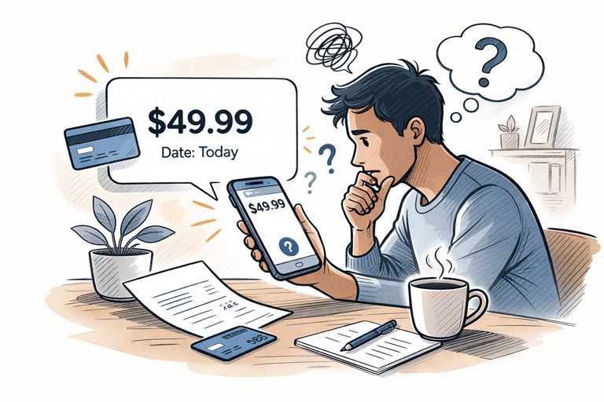

Case Study
AI-Powered Support & Conversational UX (Amazon)
I led the design of proactive, AI-driven customer support experiences that helped customers resolve common issues—such as unknown charges, delivery disruptions, and subscription management—directly within the Amazon app. By anticipating friction and guiding resolution through multimodal conversational flows and automated self-service paths, this work reduced uncertainty-driven contact volume and enabled faster, more confident problem resolution without human escalation.
My role
Staff-level IC leading interaction + conversational design
As a staff-level IC designer, I led interaction and conversational design for three large-scale initiatives, including AI chatbots, the Customer Service homepage, and cross-channel digital, device, and Alexa support.
Scope
High-volume support moments where clarity and trust are critical: billing confusion, subscription changes, delivery disruptions, and device troubleshooting.
Initiatives
Three connected programs, one consistent trust model
Customer Service Homepage: Transformed the homepage into a proactive, AI-driven experience that enables fast issue resolution through multimodal conversations, intelligent predictions, and personalized recommendations—often preventing issues before customers need to ask for help.
Digital, devices, and Alexa support: Unified support patterns across devices and channels to enable proactive device troubleshooting and reduce uncertainty-driven contacts.

AI chatbot
Conversation design that routes intent, sets guardrails, and resolves quickly
I led the design of chatbot automation that enabled customers to investigate unknown charges and manage digital subscriptions—including Prime Video, Amazon Music, Kindle Unlimited, and Kids+—directly within the Amazon app. I partnered closely with product and engineering to align on technical feasibility and ensure policy and compliance requirements were met.
Design challenges
Accurately identify intent across free-text and menu selections, define guardrails that prevent misuse without over-restricting customers, and provide a human escape hatch at the right moment—without prematurely escalating issues.

Unknown charges
Identify the right charge without overwhelming customers
Approximately half a million customers contact Customer Service each year to investigate unknown charges, and customers often can’t recognize what a charge maps to. A long list of transactions increases cognitive load and slows identification.
We designed a guided conversational flow that progressively narrowed context through targeted questions—accelerating time-to-identification and surfacing the relevant charge with confidence.
Once identified, the experience shifted from diagnosis to resolution with clear, action-oriented next steps—often enabling customers to cancel subscriptions they were unaware of, including auto-renewed trials.
Impact: Automating self-service flows reduced unknown-charge contacts by ~30% while decreasing time to resolution.

Subscription management
Bring high-intent subscription tasks into the app
Managing digital subscriptions—canceling services, changing add-on channels, or switching plans—previously required customers to log in on desktop or contact Customer Service. We introduced automation that enabled customers to manage subscriptions directly within the Amazon app.
Impact: Some subscriptions saw contact reductions of over 50%, improving clarity and task success in AI-assisted support.

Customer Service homepage
Proactive support that reduces uncertainty-driven contacts
Designed proactive experiences that surface and resolve common issues ahead of customer contact, including alerts for expiring payment methods, delivery disruptions, and self-resolvable account issues—so customers can act before confusion turns into a support interaction.
The best support interaction is the one customers never need to start.
Digital, devices & Alexa support
Unify troubleshooting across channels and devices
Designed the integration of device support into Customer Service, enabling proactive issue resolution that helps customers diagnose and resolve critical software issues before contacting support. Provided a centralized location for visibility into customers’ registered Amazon devices.
Outcomes
Clearer trust signals, faster resolution, and reusable patterns
Detailed metrics and many artifacts are confidential, but these initiatives contributed to clearer AI-led resolution paths, stronger trust signals in automated support, and reusable interaction models across chat, voice, notifications, and device surfaces.
Reduced manual handling for unknown-charge contacts, decreased resolution time for routine clarification requests, and freed associate capacity to focus on more complex issues.
Confidentiality
This case study describes scope and approach without sharing confidential artifacts or internal metrics beyond what is safe to disclose.